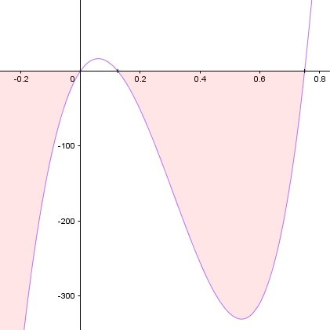

Aufgabe 61 Bestimmen Sie die Lösungsmenge der Ungleichung für x ∈ ℝ: 3,2(8x - 6)(5x² + 10)(24x² - 3x) ≤ 0 |:3,2 (8x - 6)(5x² + 10)(24x² - 3x) ≤ 0 3 Lösungsmöglichkeiten: 1. (8x - 6) ≥ 0 (5x² + 10)(24x² - 3x) ≤ 0 und umgekehrt 2. (5x² + 10) ≥ 0 (8x - 6)(24x² - 3x) ≤ 0 und umgekehrt 3. (24x² - 3x) ≥ 0 (8x - 6)(5x² + 10) ≤ 0 und umgekehrt 2. gewählt. 1. Kombination 5x² + 10 ≥ 0 gilt für alle x ∈ ℝ (8x - 6)(24x² - 3x) ≤ 0 ist dann der Fall, wenn a) 8x - 6 ≥ 0 |+6 x ≥ 0,75 und 24x² - 3x ≤ 0 |:3 8x² - x ≤ 0 x(8x - 1) ≤ 0 ist dann der Fall, wenn x ≤ 0 und 8x - 1 ≥ 0 |+1 8x ≥ 1 |:8 x ≥ 0,125 x(8x - 1) ≤ 0 trifft zu für x ≤ 0 ∩ x ≥ 0,125 = ∅ oder wenn x ≥ 0 und 8x - 1 ≤ 0 |+1 8x ≤ 1 |:8 x ≤ 0,125 x(8x - 1) ≤ 0 trifft zu für x ≥ 0 ∩ x ≤ 0,125 = 0 ≤ x ≤ 0,125 8x - 6 ≥ 0 und 24x² - 3x ≤ 0 trifft zu für x ≥ 0,75 ∩ 0 ≤ x ≤ 0,125 = ∅ 5x² + 10 ≥ 0 und (8x - 6)(24x² - 3x) ≤ 0 trifft zu für x ∈ ℝ ∩ ∅ = ∅ oder b) 8x - 6 ≤ 0 |+6 x ≤ 0,75 und 24x² - 3x ≥ 0 |:3 8x² - x ≥ 0 x(8x - 1) ≥ 0 ist dann der Fall, wenn x ≥ 0 und 8x - 1 ≥ 0 |+1 8x ≥ 1 |:8 x ≥ 0,125 x(8x - 1) ≤ 0 trifft zu für x ≥ 0 ∩ x ≥ 0,125 = x ≥ 0,125 oder wenn x ≤ 0 und 8x - 1 ≤ 0 |+1 8x ≤ 1 |:8 x ≤ 0,125 x(8x - 1) ≥ 0 trifft zu für x ≤ 0 ∪ x ≥ 0,125 8x - 6 ≤ 0 und 24x² - 3x ≥ 0 trifft zu für x ≤ 0,75 ∩ x ≤ 0 ∪ x ≥ 0,125 = x ≤ 0 ∪ 0,125 ≤ x ≤ 0,75 5x² + 10 ≤ 0 und (8x - 6)(24x² - 3x) ≥ 0 trifft zu für x ∈ ℝ ∩ x ≤ 0 ∪ 0,125 ≤ x ≤ 0,75 x ≤ 0 ∪ 0,125 ≤ x ≤ 0,75 und insgesamt für ∅ ∪ x ≤ 0 ∪ 0,125 ≤ x ≤ 0,75 = L1 = x ≤ 0 ∪ 0,125 ≤ x ≤ 0,75 2. Kombination 5x² + 10 ≤ 0 gilt für kein x ∈ ℝ = ∅ (8x - 6)(24x² - 3x) ≥ 0 trifft zu für x ≤ 0 ∪ 0,125 ≤ x ≤ 0,75 siehe 1. Kombination. --> L2 = x ≤ 0 ∪ 0,125 ≤ x ≤ 0,75 L = L1 ∪ L2 L = x ≤ 0 ∪ 0,125 ≤ x ≤ 0,75 Alternativlösung: Nullstellen von 3,2(8x - 6)(5x² + 10)(24x² - 3x) = 0 8x - 6 = 0|+6 8x = 6 |:8 x1 = 0,75 5x² + 10 = 0 |-10 5x² = -10 |:5 x² = - 2 --> keine weiteren Nullstellen 24x² - 3x = 0 3x(8x - 1) = 0 3x = 0 |:3 x2 = 0 8x - 1 = 0|+1 8x = 1 |:8 x3 = 0,125 Die Funktionswerte kleiner als 0 und zwischen 0,125 und 0,75 liegen unterhalb der x-Achse, erfüllen also die Bedingung 3,2(8x - 6)(5x² + 10)(24x² - 3x) < 0, die Nullstellen erfüllen die Bedingung = 0. L = x ≤ 0 ∪ 0,125 ≤ x ≤ 0,75
